The World of Electricity
Oh!
The power is off.
Can’t see anything.
There is an
emergency lamp.
Just switch it on, Grandpa.
Above is a scene from home. Haven’t we experienced
similar situations at our home as well?
What do we usually do to get light when there is
a power failure?
There is an
emergency
lamp in my
home.
• Candles are used
•
Haven’t you realized that people take different measures
when there is power failure? Using an emergency lamp is one
among them.
Do you have an emergency lamp at your home?
Shall we make one?
How to construct?
What are the things needed to make an emergency lamp? Write
them in the Science Diary based on the following indicators.
• How will we get the electricity to make the emergency
lamp work?
• Don’t we need a bulb to get light?
• How will we connect each part?
• How will we make a stand?
You may have such questions. Discuss your idea in the group
and present it.
Availability of Electricity
You know that electricity is a form of energy. It is a form of energy that can be
easily converted into many other forms.
Let’s check some facts related to electrical energy.
Where do we get electricity from? Pictures of some devices are given below.
Observe them.
Where does each of these devices get its electricity from? Write it down in the
Science Diary.
44
Page 45
Figure fig_ch03_p045_01 (Page 45)
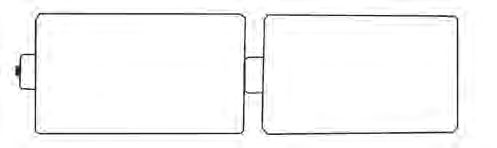
Figure fig_ch03_p045_02 (Page 45)
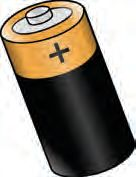
Figure fig_ch03_p045_03 (Page 45)
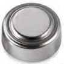
Figure fig_ch03_p045_04 (Page 45)
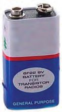
Figure fig_ch03_p045_05 (Page 45)
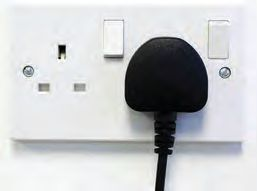
Figure fig_ch03_p045_06 (Page 45)
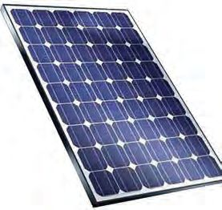
Figure fig_ch03_p045_07 (Page 45)
Class - VII
Observe the pictures of some devices that supply electricity.
We use them on different occasions in our daily life. Let’s learn more about
them.
Sources of Electricity
You know that electric cells, generators, solar cells etc. are the devices that
provide electricity. Devices that provide electricity are termed as sources
of electricity.
You have learned that electric cells are devices that can convert chemical
energy into electrical energy. Electrical energy is stored as chemical energy in
them. This chemical energy is converted into electrical energy when we use
them.
Cell and Battery
Have you heard of cell and battery? What is the difference between cells and
batteries?
ST-275-4-BASIC SCI. (E)-7-VOL-1
Look at the pictures below.
_
+
_
+
Figure 1
+
_
Figure 2
What is the difference between them?
A battery is an arrangement made by connecting more than one cell into a
single unit. Observe the pictures (A, B, C) in which the cells are connected in
three different ways. Do all of them represent the right way for making a
battery? Which among them is wrong? Which one will give more electricity?
From which source do these two devices get
electricity?
What is the difference between the sources of
electricity used in these devices?
Cells – Rechargeable and Non-rechargeable
What would you do if the cell in a clock is not working? What if your mobile
phone runs out of charge? A cell in a clock cannot be used again when its
charge is completely used up. But the battery in mobile phones can be
recharged and used again.
You may be using rechargeable and non-rechargeable cells in different devices
at home. Classify them and write in your Science Diary.
For Further Reading
A Brief History of Electricity
Electricity, light, heat, sound etc., are different forms of energy. Electricity
is a form of energy widely used for various purposes. The ancient Greeks
understood that amber (a kind of thickened resin) could attract substances
like hair when it was rubbed against wool. Subsequently numerous
experiments conducted by a number of people over the years led to the
production and use of electricity as seen today.
Lighting a bulb with a battery
Usually we depend on electric bulbs for getting
light. Different types of bulbs are in use. Observe
this picture. What kind of bulbs are used in
emergency lamps?
What are the advantages of using LED?
L E D (Light Emitting Diode) helps to save energy considerably.
CFL requires less energy compared to filament lamps. CFL was widely used
till recently. But nowadays CFL is not commonly used. LED bulbs require
less energy than CFL. New generation LED bulbs have also been invented
recently. Inquire about them.
Filament bulb
Compact Fluorescent Lamp
(CFL)
Light Emitting Diode
(LED)
LED module is an arrangement of more than
one LED bulb in a strip.
Don’t you have connecting wires, LED
module, 9 V battery and a connector in your
Science Kit? Try to light up the LED module
using them. Do this experiment in groups and
present in the class. Could all the groups light
up the bulb? Draw the mode of connection in
your Science Diary.
Haven’t you lighted the LED bulb. Write down the electric source and electric
device used for this other than the connecting wire.
Electric Circuit
Electric circuit is an arrangement that passes electricity from an electric
source to a device. A circuit requires at least an electric source, connecting
wire and an electric device.
47
Observe the following pictures. Parts of certain circuits are represented in the
pictures given below.
Circuit 1
Circuit 2
Circuit 3
Will the bulbs in these circuits glow? Why? Analyse the pictures and record in
the Science Diary.
Closed Circuit and Open Circuit
A circuit is a closed one, if it is complete. If the circuit is not complete, it is
an open circuit. Electric devices can work only in a closed circuit.
Are the following circuits closed or open? Why? Analyse the figures and write
down in the Science Diary.
Circuit 1
Circuit 2
We use bulbs and fans while we are in a room. Then are the circuits of the bulb
and fan closed or open? Don’t you switch off the bulb and fan when you leave
the room? How can we make circuits open and closed as required?
48
Page 49
Figure fig_ch03_p049_01 (Page 49)
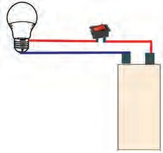
Figure fig_ch03_p049_02 (Page 49)
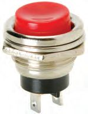
Figure fig_ch03_p049_03 (Page 49)
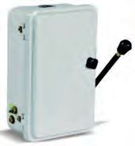
Figure fig_ch03_p049_04 (Page 49)
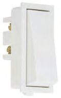
Figure fig_ch03_p049_05 (Page 49)
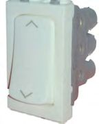
Figure fig_ch03_p049_06 (Page 49)
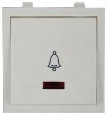
Figure fig_ch03_p049_07 (Page 49)
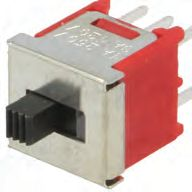
Figure fig_ch03_p049_08 (Page 49)
Class - VII
Observe the picture. What arrangement do you see
in the picture to turn the bulb on and off whenever
required?
Bulb
Switch
Switch
Switch is a device used to make a circuit closed or
open when required. A circuit becomes closed
when switch is turned on. It becomes open when
switch is turned off.
Battery
Can you include a switch also in the circuit you
have made? Do it in groups and present it in the class.
For Further Reading
Different Types of Switches
We use different types of switches in different situations. Let’s get familiar
with them.
Ordinary
Switch
Two - Way
Switch
Bell
Switch
Push Button
Switch
Sliding
Switch
Main
Switch
49
Page 50
Figure fig_ch03_p050_01 (Page 50)
Basic Science
Flow of Electricity
In the circuit you have made, electricity from the battery reaches the bulb only
when you switch it on. How does electricity reach the bulb from the battery?
Do all substances allow electricity to pass through?
You might have noticed substances which conduct electricity and do not
conduct electricity. Design an experiment to distinguish them and present it
in the class.
Take the 9 V battery, connecting wire and the LED module from your Science
Kit. Arrange them as shown in the figure.
Will the LED module glow in this circuit?
Why? Connect the ends marked A and B
using different materials.
LED Module
A
B
Materials: Safety pin, a piece of wood,
paper, steel scale, charcoal, pencil graphite,
plastic bangle, metal bangle, wet paper,
copper wire.
Tabulate your observations.
Material used
Observation
Inference
Paper
The LED module did
not glow
does not conduct
electricity
Which of the materials you used made the LED glow? What could be the
reason? Isn’t it due to the passage of electricity through those materials?
Which materials conduct electricity?
Which materials do not conduct electricity?
Write your observation in the Science Diary.
Place your fingers over the ends of A and B in the device made for the
experiment. Does the LED glow? Repeat the experiment with wet fingers.
What change did you notice? Give reason.
Do not operate a switch with a wet hand. Find out the reason behind it and
write it down in the Science Diary.
Conductors and Insulators
Conductors are the substances that allow electricity to pass through them.
Insulators are the substances that do not allow electricity to pass through.
Iron, gold, copper, steel, graphite and water are electric conductors. Dry
wooden block, paper, plastic, cloth etc., are insulators.
When we turn on a switch do we touch the parts through which electricity
passes? The parts we touch in electrical appliances are made of insulators.
What about the parts that conduct electricity? There are many situations
where conductors and insulators are used. Tabulate such situations you are
familiar with.
Situations in which
conductors are used
The copper wire through
which electricity passes
through
Situations in which
insulators are used
Plastic coating over
copper wire
Insulation Tape
Let’s repeat the experiment that you have done to distinguish conductors and
insulators. Connect the ends A and B using each of the following substances.
A
B
Materials: iron nail, copper wire, silver
ornament, gold ornament, aluminium
wire, a piece of zinc, lead wire, magnesium
ribbon, a piece of tin sheet.
Do all substances conduct electricity?
Do these substances have any common characteristics?
You have understood that all metals are conductors of electricity.
Metals
Metals are lustrous, hard and strong substances. Many metals like iron,
copper, silver, gold, aluminium, zinc, lead, mercury, nickel, etc., have been
discovered. Usually metals are in solid state under normal atmospheric
temperature. But mercury exists in liquid state. All metals are conductors
of electricity. The discovery and use of metals have brought remarkable
changes in human life. You might have understood the changes that
occurred in agriculture tools and social life from the Paleolithic to the
Bronze Age.
In the circuit you have made, the electricity from the battery reaches the bulb
through the metal wire coated with plastic.
We use different types of metallic wires in our home. Remove the insulation
and examine the metallic wires inside.
Which metal do we normally use to transmit
electricity through electric lines?
What is the reason for not using copper wire in
electric lines? Inquire.
Let’s get to know more electric circuits
So far we have made electric circuits using LEDs. Can you make more circuits
by including other devices? Observe the picture.
You may be familiar with the materials shown in
the picture. Let’s try to make different circuits
using them. Work in groups and arrange circuits
in any boards like hard board, card board or cork
sheet. Present these circuits before the class. Let
each group examine the circuits made by other
groups.
Circuit
Bottom of the board
Top part of the board
Haven’t you prepared separate circuits for operating LED module and mini
motor? What will happen if you include all of them in the same circuit? Do all
the devices in your home start function when a single switch is turned on? If
so, how many circuits will be needed in the house? Check how many circuits
are there in your classroom. What tools did you use to make the circuits?
Haven’t you seen electricians use different tools for different purposes such as
cutting wire, stripping off insulation and testing electric current. Observe the
pictures.
Cutting pliers
Stripper
Screw driver
Find out the uses of each of the above tools from an electrician.
Symbols
How many circuits did each group make? Write down the materials used in
each circuit. Certain signs are used to indicate the components in circuits.
These are symbols. Some commonly used symbols are given below. Let’s get
familiar with them.
Material /Object
Figure
Conducting wire
Switch off mode
Switch on mode
Cell
Battery
An unlit bulb
A glowing bulb
Buzzer
Mini motor
LED
54
Symbol
Page 55
Figure fig_ch03_p055_01 (Page 55)
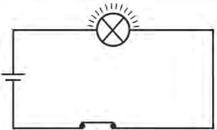
Figure fig_ch03_p055_02 (Page 55)
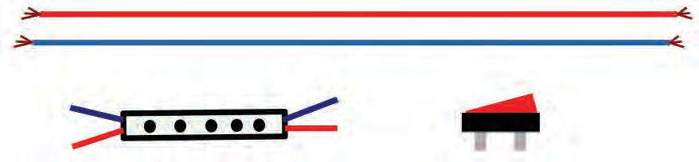
Figure fig_ch03_p055_03 (Page 55)
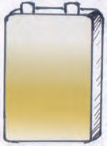
Figure fig_ch03_p055_04 (Page 55)
Class - VII
Observe the given circuits. Identify the parts marked A, B, C and D.
A
A
B
D
D
B
C
C
Circuit 1
Circuit 2
Circuit 1
A ........................
B ........................ C ........................ D ........................
Circuit 2
A ........................
B ........................ C ........................ D ........................
What are the differences between the two circuits?
Draw the circuits you have already made using the symbols.
From Circuit to Device
We can use 9 V battery and LED module for making an emergency lamp.
How will you connect them to make a circuit? Try to draw it.
Connecting wire
LED Module
Switch
Battery
After arranging the circuit, check whether the LED glows.
Now we need a stand also. The easy way of making a stand is given in the
figures (1, 2, 3 and 4). Examine them and find out the materials used.
Construction of Stand
Take a half -litre bottle with a wide mouth as shown in Fig 1. Fill it with sand.
Put two holes in the cap as shown in Fig 2. Make holes in the pipe also as
shown in Fig 3. Fix the PVC pipe in the hole on the cap. Arrange the circuit as
shown in Fig 4.
Figure - 1
The hole for inserting the
wire from the LED through
the pipe
PVC
pipe
LED Module
Switch
Battery
The hole for fixing wire
from pipe to the switch
Plastic
bottle
PVC pipe
Figure - 3
Figure - 4
Pay attention to the following points while making the emergency lamp.
• The circuit should be made in such a way that the wire
from LED to the switch and from the switch to the
battery are not exposed.
• Battery should be fixed firmly in the sand.
• The emergency lamp should be lifted only by holding the
bottle.
More than one LED module can be used for getting light in all
directions. Insulation tapes of different colours can be used to
make the emergency lamp more attractive. Exhibit the
emergency lamp made by each group before the class. Select
the best one based on the indicators given below.
56
Page 57
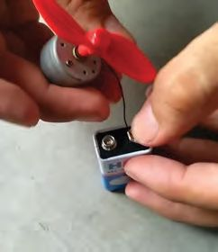
Figure fig_ch03_p057_01 (Page 57)
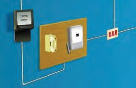
Figure fig_ch03_p057_02 (Page 57)
Class - VII
What are the things to be assessed?
• Efficiency
• Attractiveness
• Durability
•
Household Electricity
We have used a 9 V battery to make an emergency
lamp. Will we get an electric shock if we touch the
wire connected to the battery?
If, somehow the electricity used at home passes
through our body, it can cause electric shock.
What is the reason? The electricity we used at home
is of 230 V. It is not safe to use high voltage electricity
while conducting experiments.
Electric Shock
We get an electric shock when electric current passes through our body.
Our body is an electric conductor since water is present in the living cells.
Electric shock occurs when a broken power line or an external electric
source, like an uninsulated circuit comes into contact with the body.
Sometimes this causes severe burns. Cardiac arrest is the major reason
for death due to electric shock.
Observe the given situations. Find out the situations in which there is a chance
for electric shock and put a tick mark (√ ) in the appropriate boxes.
Using devices of good
quality
Removing the plug pin
without switching off
Changing bulb when the
switch is on
Turning on a switch with
wet hand
Using wires without proper
insulation
Repairing devices while
switches are turned on
Removing the fan from the
ceiling after turning the
main switch off
Using footwear while ironing
clothes
57
Page 58
Figure fig_ch03_p058_01 (Page 58)
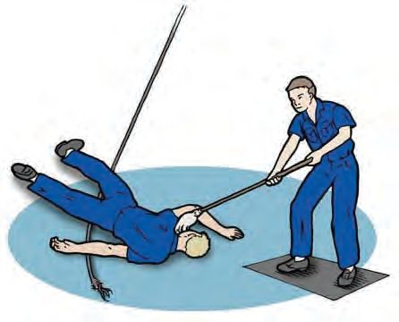
Figure fig_ch03_p058_02 (Page 58)
Basic Science
Haven’t you found out the situations in which you are likely to get an electric
shock? Has anyone in your house experienced a severe shock? If so, in what
context did it happen? Share your experience with the class.
What are the precautions to be taken while handling electrical appliances?
Write them down in the Science Diary.
For Further Reading
Lightning and Electricity
Haven’t you noticed the lightning during rainy season? Clouds have a
very high electrical charge. Lightning is caused by the transfer of charge
in clouds to nearby clouds or to the earth. Lightning strikes cause accidents
because it is a very powerful electric current.
In Case of Electric Shocks
What happens if you try to touch or
move someone who is experiencing an
electric shock? Won’t we also get the
shock? Hence one should never touch a
person who has an electric shock.
What are the things to be done
immediately to save a person who has
suffered an electric shock?
• The first thing to be done is to
disconnect the electric contact. You can switch off or remove the fuse for
this. If it is not possible, separate the person from the electric circuit using
a dry wooden stick or some other good insulator.
• In the case of heart failure, perform chest compressions. Place one hand
on top of the other and apply continuous pressure on the victim's chest.
This should be done until the heart starts beating again.
• If breathing stops, give artificial respiration. Keep the body warm by
massaging.
• Take the person immediately to a hospital if the shock is severe.
58
Page 59
Figure fig_ch03_p059_01 (Page 59)
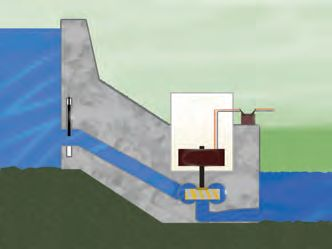
Figure fig_ch03_p059_02 (Page 59)
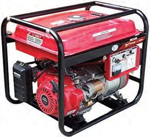
Figure fig_ch03_p059_03 (Page 59)
Class - VII
Generator
Don’t we use a generator at school when some
fairs or PTA meetings are held? Why is it used?
Which fuel is used to operate a generator?
The generator produce electricity making use
of energy from fuels like petrol, kerosene,
diesel etc. You have learned in the previous
class that in a generator chemical energy first
gets converted into mechanical energy and
then into electrical energy. Can generators be
used regularly to get electricity at home and school? Discuss on the basis of
cost of diesel, pollution etc. What is the solution?
Hydroelectric Power Station
You might have seen metallic wires stretched over tall poles. From where do
these lines bring electricity? How this electricity is generated?
The power we use at home is generated by huge generators in hydroelectric
power stations.
How do generators in a hydroelectric power station work?
Generators in hydroelectric power stations work using the energy obtained
when water stored in reservoirs of dams falls from a height. In dams, water
which is stored in reservoirs is carried through pipes and made to fall forcefully
on to the turbines connected to the generators. The force of falling water
rotates the turbines. The generators connected to the turbines start to work
and produce electricity. This electricity is transmitted to various places
through electric lines.
A major part of electricity produced in Kerala is from the hydroelectric power
station in Idukki. Discuss the merits of hydroelectric power stations as
compared to diesel generators based on cost of fuel, pollution etc.
Other Possibilities for Electric Power Generation
Observe these pictures.
Thermal power station
Nuclear power station
Windmill
You have already understood that electricity is produced in our country by
using fuels like coal and diesel. We also use the power of wind and tidal waves
as well as nuclear energy.
Observe the pictures given below.
Solar panel
Chandrayan 3
Solar car
Solar cell is a device that converts solar energy into electrical energy. Solar
panel is a combination of two or more solar cells. Solar energy is a solution for
the future energy crisis. Cost effective technologies for harnessing solar energy
are to be developed. Researches are going on for this
purpose.
Don’t Waste Electricity
The production of electricity has to be increased when
there is higher consumption. Doesn’t the generation of
more electricity require more fuels? Observe this poster.
60
Page 61
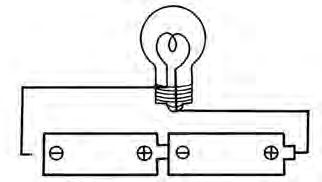
Figure fig_ch03_p061_01 (Page 61)
Class - VII
What message does this poster convey? Which are the circumstances in which
electricity is wasted? Discuss. Do the fans and bulbs left working even when
there is nobody in your class room?
We have to adopt certain measures to prevent wastage of electricity and to
ensure its judicious use. Prepare a poster highlighting these factors and
display it in the class room.
Let’s Assess
1. What is the energy change in a battery when it is connected to an
emergency lamp?
a. Electrical energy changes into light energy
b. Light energy changes into chemical energy
c. Chemical energy changes first into electrical energy and then into
light energy
d. Chemical energy changes into electrical energy
2. Of the following, which is in an open circuit?
a) Rotation of fan
b) A damaged bell is switched on
c) Working of a mixie
d) Glowing of a bulb
3. From where do the artificial satellites get electricity for its working?
a) Solar panel
b) Diesel
c) Petrol
d) Coal
4. Sometimes there is power shortage in Kerala during summer season.
Why?
5. A person is standing in water. An electric line breaks and falls into
the water. Is the person likely to get an
electric shock? Give reason.
6. Observe the diagram of an open circuit.
Convert it to a closed circuit using
appropriate symbols and draw it.
Extended Activities
1. Construct electric circuits using different devices and battery.
2. Construct a model of a hydroelectric power station and explain its
working.